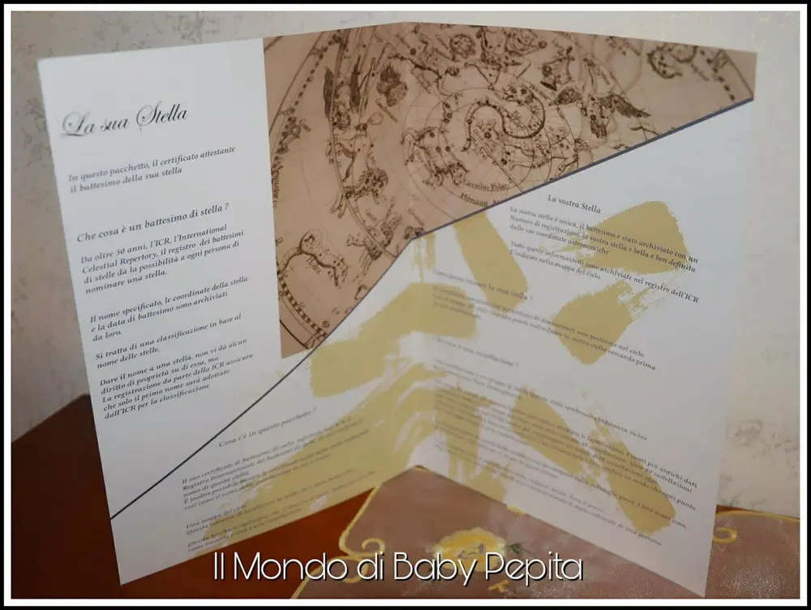
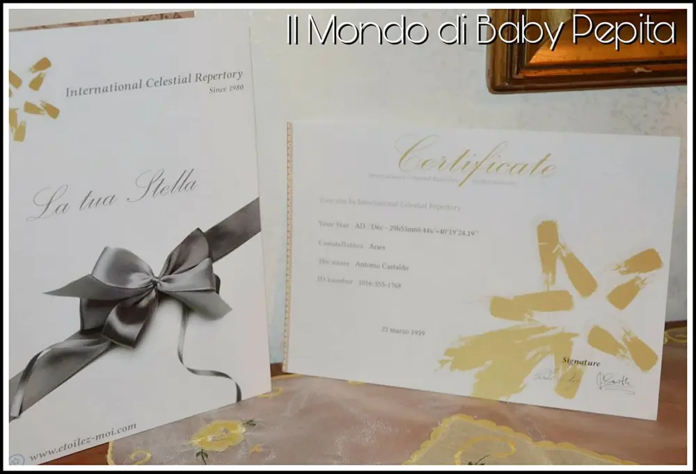

La tua stella con ETOILEZ MOI
Stelle: È natale e tutto sembra più magico. Ma quanto è difficile fare regali originali soprattutto alle persone più care? Oggi io vi mostro un regalo bello, originale e del tutto personale. regalare una stella!
Eh sì, quante volte abbiamo guardato il cielo e abbiamo pensato ad una persona?
Quante volte abbiamo visto i film e abbiamo visto che una stella porta proprio il nome del protagonista. Non era tutta fantascienza no; è possibile davvero regalare un punto luminoso per eccellenza. Essere segnati nel firmamento come sigillo di un affetto indissolubilmente. È possibile infatti battezzare una stella e dedicarla.
Che sia un amore o un caro defunto o perché no, un'amica che non vediamo da tempo, magari amica di infanzia oppure regalo di battesimo.
Essere segnati nel firmamento come sigillo di un affetto indissolubilmente. È possibile infatti battezzarla e dedicarla.

Comprando una stella riceveremo un certificato di registrazione della stessa battezzata al repertorio celeste internazionale.
Riceveremo anche una mappa del cielo dove potremo individuare la stella che abbiamo regalato.

Un momento di puro amore ed io ho deciso di fare questo regalo al mio papà.
Al mio eroe e al mio uomo per la vita.
Cosa bisogna fare?
Entrare sul SITO ETOILEZ-MOI e cercare la sezione che vogliamo comprare ovvero:
- dare un nome ad una stella che è indicata per una nascita di un bambino, un battesimo o un compleanno.
- battezzare una stella per un amore che sia per un matrimonio, un impegno d'amore o per un regalo di San Valentino.
- regalare una stella ad un amico davvero importante per noi che sia per il piacere di offrire un gesto importante, un compleanno o per il Natale.
- una stella per un caro defunto, quindi un tributo, un ricordo, un vincolo che resterà per sempre lì tra le stelle.
Regalare una stella è senza dubbio un gesto fatto dal profondo del cuore.
Sembra un gesto come tanti ma io vedo questa cosa davvero importante e unica al mondo.
Esistono di diversi prezzi e questo perché si possono scegliere diversi pacchetti regalo.
C'è la stella di 24,90€ che riceverete:
- Il certificato battesimale con il nome scelto
- una mappa del cielo in cui appare la tua stella
- un record sulla costellazione
- un poema
Ed è quello che ho regalato a mio padre.
Ci sono di diversi prezzi a seconda del contenuto della scatola che ricerete. Qualcuna contiene anche un souvenir .
Le persone che la riceveranno io sono sicura che resteranno a bocca aperta perchè dimostrerete davvero quanta importanza hanno nella vostra vita. Non perdere quest'occasione di lasciare un vostro segno nel firmamento.
